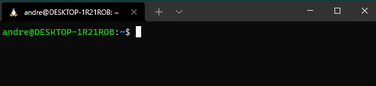

Installing pyfurc on Ubuntu¶
At the end of this guide you will have pyfurc installed on your system.
Introduction¶
Since pyfurc is also intended for inexperienced users, the following sections will be very verbose and in-depth. This guide assumes no prior knowledge of how to use either Python or the Linux command line. Nevertheless sometimes you may have to use your favourite search engine to look up the usage of a certain command.
Attention
pyfurc requires a Linux system to run. So far only Ubuntu and Linux Mint have been tested.
For Windows 10 users we provide a guide to use Ubuntu from within Windows using Windows Subsystem for Linux.
A Virtual Machine running Ubuntu should work as well.
Installing the Python package manager pip¶
For the installation of pyfurc we need Python and the python package manager pip. Python comes shipped with Ubuntu but you may have to install pip.
First, open a terminal in your home directory. WSL users refer to Accessing the Ubuntu Subsystem on how to do this.
It should look similar to this:
Now just enter
sudo apt install python3-pip
and hit return to install pip.
Now that the package manager pip is installed, we can use it to install pyfurc.